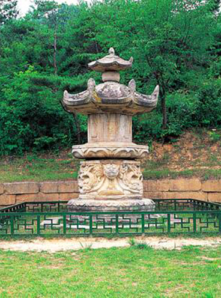
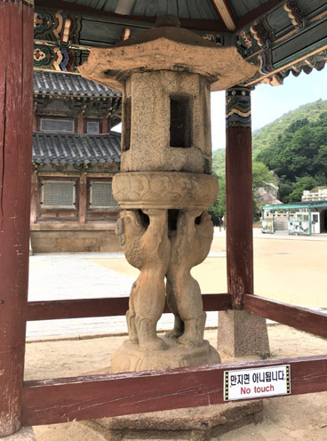
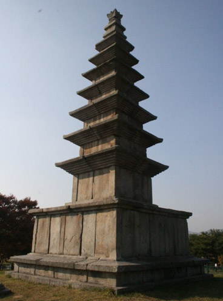
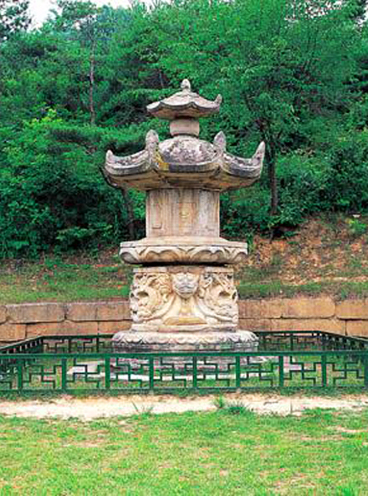
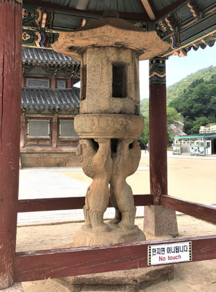
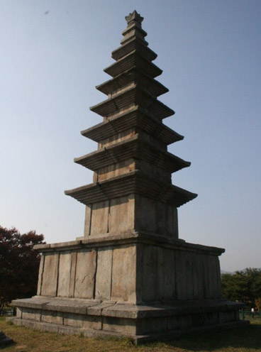

숭례문 (崇禮門)
또한 숭례문은 성의 안팎을 연결하는 통로였다.
단순한 통로 이상의 의미를 지니는데, 왕이 지나고 중국 사신들을 맞이하는 등 국가적 의례 시 통로로 대표성을 가지고 있었다. 숭례문은 다른 성곽 문에 비해 큰 규모를 갖는다.
이는 숭례문이 도성의 문이기 때문인데, 임금의 행차에 따른 어도(御道)나 국가 의례 행차, 혹은 임금의 상(喪)때 대여(大輿)가 지나갈 수 있도록 폭과 높이를 갖추어야 했다.
숭례문은 조선 도로망의 기점이기도 하였다. 특히 도성 내 주요대로 끝단에 위치하고 있던 숭례문은 전국으로 뻗는 도로망의 시작이었으며 도성으로 들어오는 관문이었던 것이다.
서울특별시 중구에 있는 조선전기에 축조된 서울도성의 성곽문. 국보.
숭례문은 일명 남대문(南大門)이라고도 하는데, 서울 도성의 사대문 가운데 남쪽에 있기 때문에 붙여진 이름이다.
1962년 12월 20일에 국보로 지정되었고, 문화재청 숭례문 관리소에서 관리하고 있다.
서울 숭례문은 1396년(태조 5) 축조된 서울도성의 정문으로, 1398년(태조 7) 2월에 준공되었다. 그 뒤 1448년(세종 29) 개수공사가 완료되었다.
도성의 사대문 중 인왕산의 남쪽 기슭에서 남산의 북서쪽 기슭 사이에 자리 잡고 있는 것이 숭례문이다.
조선시대 한양 도성의 대문이었던 숭례문은 당시 방어적 성곽의 관문으로 군사적 방어로서의 일차적 기능이 있었다.
숭례문은 성곽의 문이라는 그 군사적 기능에 충실하게 축조되었는데 화강암 석재로 6~7m의 높이로 육중하고 견고하게 육축을 쌓았을 뿐 아니라,
출입문 또한 12cm의 두꺼운 판목에 철엽을 덧씌워 내화성을 보강하는 등 외적 방어의 기능을 잘 갖추고 있다.
숭례문은 대한민국의 국보 1호로 지정된 우리나라 문화유산입니다.

행사 안내

숭례문 파수의식은 조선시대 중요한 군례의식이었던 파수(도성 수비),
즉 도성문을 열고 닫는 개폐의식과 순라의식 등을 연결하는 의식을 재현하고 있는 행사입니다.
공지사항
new ◈ 4년 만에 다시 돌아온 ‘숭례문 역사 이야기’ 무료 해설
keyboard_arrow_down◈ 신한은행과 함께하는 숭례문 오디오 가이드 서비스

등록일: 2022. 10. 20
안녕하세요.
10월 22일~11월 19일까지 매주 토요일마다
하루 두차례씩 숭례문에서 숭례문의 건축적인 아름다움과 의미를
해설사 설명을 들으며 관람할 수 있는 숭례문 무료 해설 프로그램을 진행합니다.
회당 35분 정도 소요되도록 구성했으며, 사전 예약 없이 현장에서 바로 참여할 수 있습니다.
감사합니다.
◈ 운영시간: 14:00~14:35, 15:00~15:35 / 회당 약
35분 소요
◈ 참여방법: 현장참여, 무료, 예약없음.
◈ 집합장소: 숭례문 정문 종합 안내판

포토 갤러리

대한민국 국보
한국에서는 건축물을 비롯한 유형 문화재 가운데 가치가 높은 문화 유산을 보물이라 하며,
이 보물 중에서 특히 역사적·학술적·예술적·기술적 가치가 크다고 인정 받은 유산을 문화재위원회에서 심사하여 별도로 국보로 지정한다.
<문화재는 번호의 순서보다 가치로 기억해주세요.>
 





사대문


<돈의문(敦義門)_서대문(투시도)<
서울 4대문 중의 하나로, 1396년(태조 5년) 건립된 서울성곽 축조 당시 서쪽의 대문(西大門)의 정식 명칭이다.
임진왜란 때 불에 타 숙종 때인 1711년 다시 건립되었으나 일제강점기 당시 조선총독부에 의해 철거됐다.

<숙정문(肅靖門)_북대문 >
서울특별시 종로구 삼청동(三淸洞)의 북악산(北岳山) 동쪽 고갯마루에 있는 조선시대 성문.
사적으로 지정된 한양도성에 포함되어있다.

<흥인지문(興仁之門)_동대문>
서울특별시 종로구에 있는 조선 시대의 성문이다.
임금이 살고 있는 궁궐을 비롯하여 중요한 국가 시설이 몰려 있는 한양 도성(한성부)을 보호하기 위해 만들었다. 1963년에 보물로 지정되었다.

<숭례문(崇禮門)_남대문>
서울특별시 중구 남대문로 4가에 있는 도성의 남쪽 정문.
1962년 12월 20일 국보로 지정되었다.
숭례문 주변 관광

<청계천>
서울 종로구 창신동
https://www.sisul.or.kr/open_content/cheonggye/

<서울광장>
지하철 1호선 시청역 5번 출구에서 91m
서울 시청앞 시민 광장

<남대문 시장>
서울 중구 남대문시장4길 21
지하철 4호선 회현역 5번 출구에서17m
일요일 휴무

<남산케이블카>
지하철 4호선 명동역 3번 출구에서
퍼시픽 호텔 오른쪽 길로 도보 8분
http://www.cablecar.co.kr/

<명동>
지하철 4호선 명동역 6번 출구에서 218m
참고사이트 www.visitseoul.net (visit seoul)


숭례문 관광과 함께 서울 도성주변을 관광하시면 더욱 즐기실 수 있습니다!
화요일 부터 일요일: 09:00 ~ 18:00 / 매주 월요일 휴무
주소: 서울특별시 중구 세종대로 40
전화: 02-779-8547